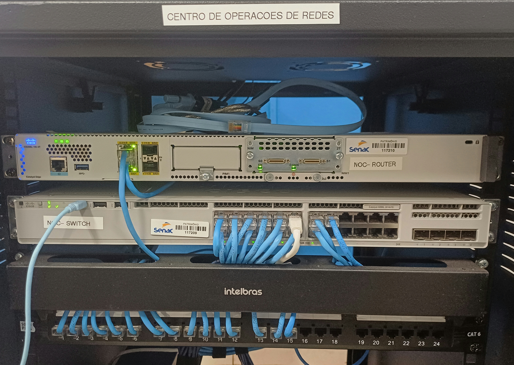
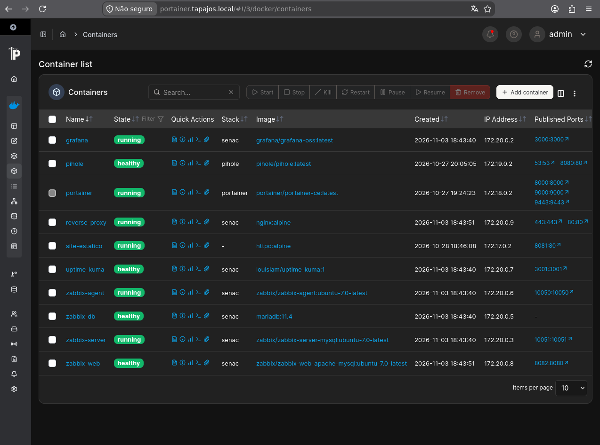
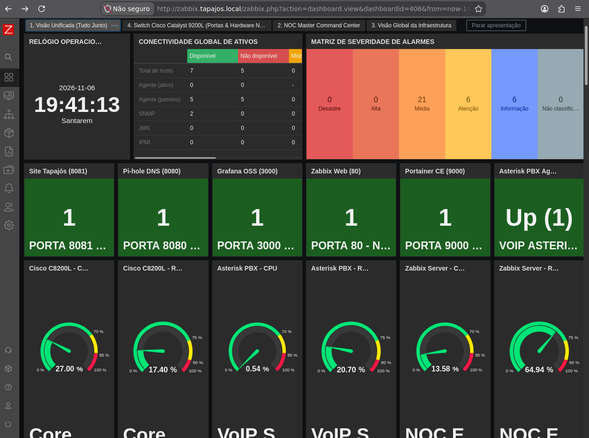
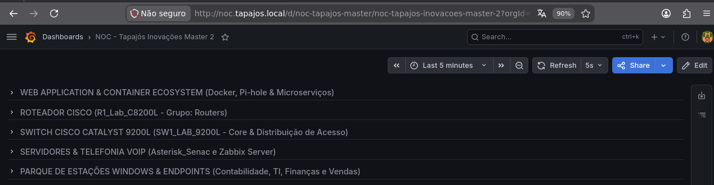
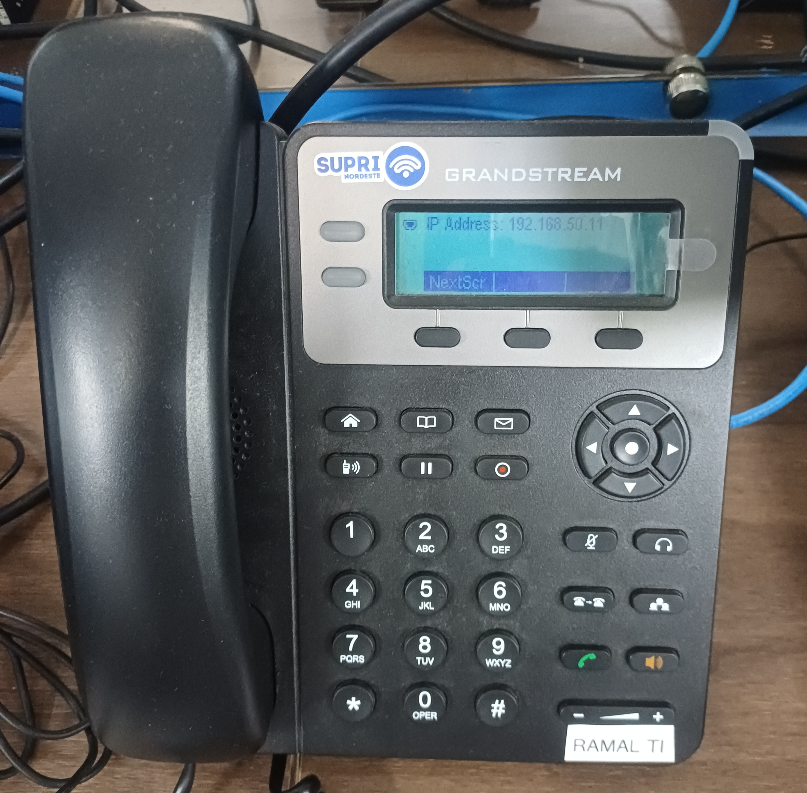
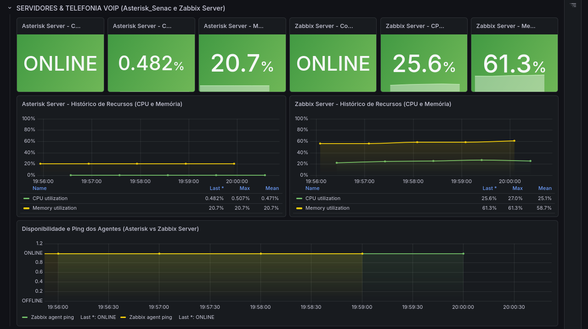
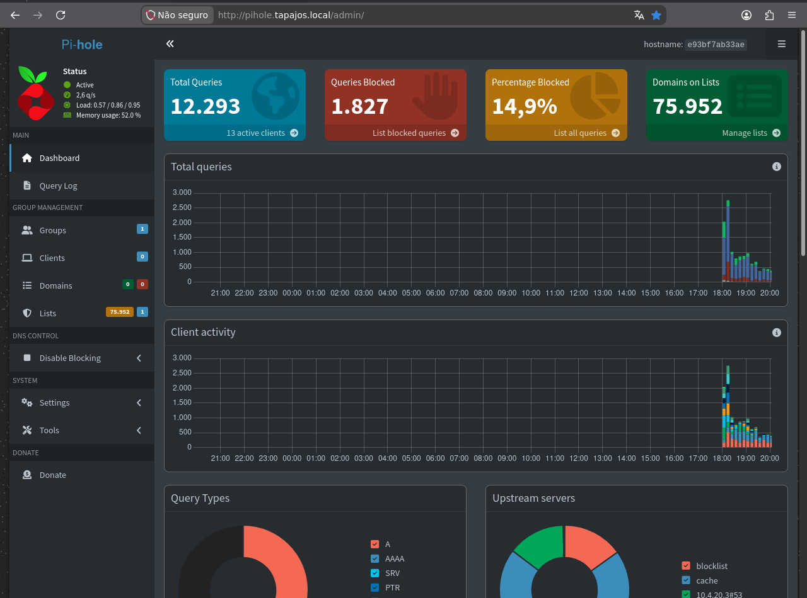
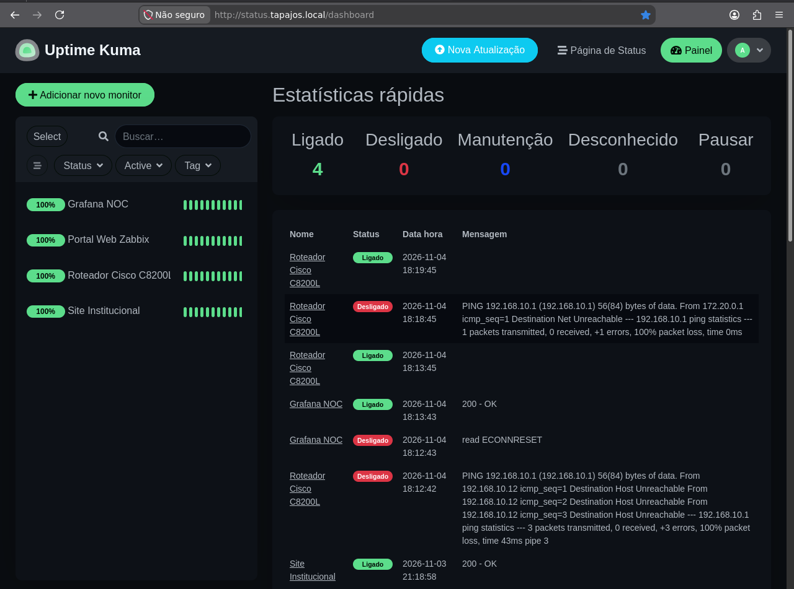
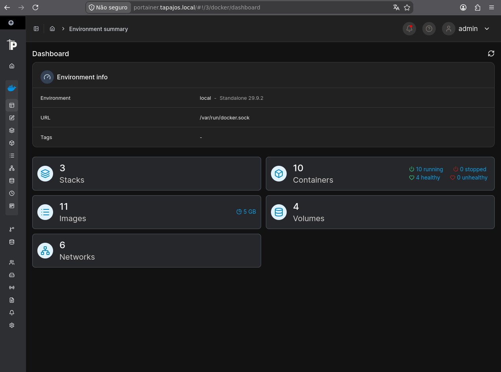

Cabeamento
Organizar a base física com rack, patch panel e cabeamento estruturado.
Uma rede corporativa, do rack e do cabeamento estruturado ao roteamento Cisco, sete VLANs, serviços Linux e um ecossistema de monitoramento. Um cenário empresarial fictício. Equipamentos, capturas e trabalho técnico reais.
A Tapajós Inovações é uma organização fictícia que contextualiza um projeto de modernização de rede empresarial. O laboratório por trás do cenário é físico: equipamentos foram instalados, redes segmentadas, serviços implantados e evidências operacionais coletadas.
O Enterprise NOC — From Scratch documenta a trajetória do rack e da configuração do switch à segmentação de setores, serviços Linux e observabilidade. É um estudo de caso técnico, não uma operação em produção ou um painel ao vivo.
O negócio simulado parte de problemas de conectividade, Wi-Fi, telefonia e visibilidade. O projeto relaciona uma resposta técnica a cada necessidade.
Organizar a base física com rack, patch panel e cabeamento estruturado.
Separar Wi-Fi corporativo e IoT em segmentos lógicos próprios.
Hospedar PBX interna e serviços RADIUS em um servidor Linux dedicado.
Utilizar Zabbix, Grafana e Uptime Kuma para observar infraestrutura e serviços.
Roteador, switch, rack físico e computadores por departamento.
Linux, containers, monitoramento, telefonia e DNS no mesmo cenário.
Capturas e configurações datadas, diferenciadas de diagramas explicativos.
O roteador Cisco Catalyst C8200L e o switch Catalyst C9200L estruturam a rede. Selecione uma VLAN para conhecer a função, os equipamentos documentados e a referência técnica.
Topologia lógica baseada na configuração do switch de 04/11 e no inventário do projeto. Selecionar um segmento não representa estado operacional em tempo real. A Gi1/0/1 está registrada como trunk no lado do switch.
Nove componentes integram as camadas de rede, sistemas e observabilidade. Os cartões levam aos registros técnicos, não a páginas de produtos simulados.

Roteador C8200L, switch Catalyst C9200L, trunk, VLANs e métricas SNMP.
Abrir documentação técnica ↗
Dois computadores Linux documentados, serviços conteinerizados e infraestrutura.
Abrir documentação técnica ↗
Monitoramento da infraestrutura, hosts, interfaces, itens, eventos e dashboards.
Abrir documentação técnica ↗
Dashboards históricos de equipamentos Cisco, servidores, estações e aplicações web.
Abrir documentação técnica ↗
Telefonia IP com dois ramais Grandstream documentados na VLAN 50.
Abrir documentação técnica ↗
Serviço de autenticação de rede instalado com o Asterisk em Linux.
Abrir documentação técnica ↗
Filtragem DNS com capturas de consultas, bloqueios e atividade de clientes.
Abrir documentação técnica ↗
Verificações de disponibilidade e histórico de eventos de serviços selecionados.
Abrir documentação técnica ↗
Visão operacional dos containers Docker, inventário de imagens e redes.
Abrir documentação técnica ↗Fotografias e capturas coletadas no ambiente físico. Filtre por assunto e abra qualquer imagem para visualizar em tamanho ampliado. Todas apontam aos arquivos originais do projeto.
25 imagens nesta seleção · As imagens são históricas, coletadas principalmente em 06/11/2026. Cada captura registra o que estava visível naquele momento, não uma transmissão ao vivo.
REGISTRO REAL DO LABORATÓRIOT568A — ordem dos pinos RJ45 · 1 → 8
Os cabos Ethernet confeccionados no laboratório seguem o padrão de pinagem T568A. Em um cabo direto, as duas extremidades utilizam a mesma sequência T568A. O desenho representa a posição dos oito condutores, com os contatos do conector voltados para o observador.
Zabbix, Grafana, SNMP e Uptime Kuma apresentam visões complementares do ambiente. Os números abaixo foram preservados dos registros de monitoramento de 06/11/2026.
Sete VLANs e atribuições de portas registradas no Cisco Catalyst C9200L.
Fotografias do rack, inventários, Docker/Portainer e capturas do monitoramento.
Registros técnicos bilíngues e arquitetura de redes organizados no repositório.
O repositório contém descrições técnicas, fragmentos de configurações datadas, inventários e evidências. Navegue por assunto ou consulte o histórico completo.
O GitHub é a fonte documental do projeto. As páginas públicas explicam o que foi construído e coletado, separando os fatos do laboratório físico do cenário empresarial fictício.
Explorar repositório no GitHub ↗Não. A empresa e seus requisitos de modernização compõem um cenário corporativo fictício. Os equipamentos e as capturas documentam um laboratório físico real de treinamento.
Não. O portal é uma apresentação técnica estática hospedada no GitHub Pages. As imagens de monitoramento são capturas datadas, não telemetria em tempo real.
Não. A arquitetura física e as atribuições do switch estão documentadas. Não apresentamos aplicação de ACLs e testes de autenticação como concluídos quando não existe registro correspondente.
Não. Os registros históricos incluem agentes indisponíveis e itens não suportados. O portal apresenta essas constatações sem adulterar os resultados.
Quer conhecer mais respostas sobre a infraestrutura, as decisões técnicas e o troubleshooting? Consulte o FAQ completo do projeto.
Explore as evidências, consulte os registros de configuração e conheça um projeto prático de redes empresariais construído em laboratório físico, com contexto corporativo fictício.